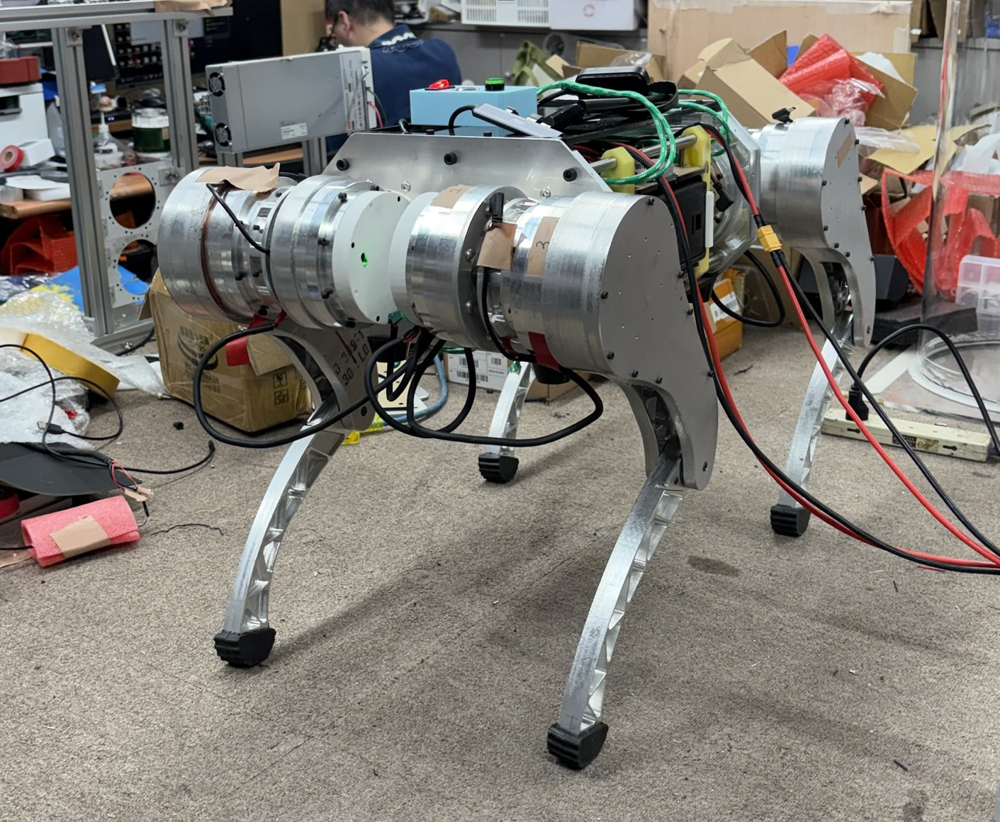
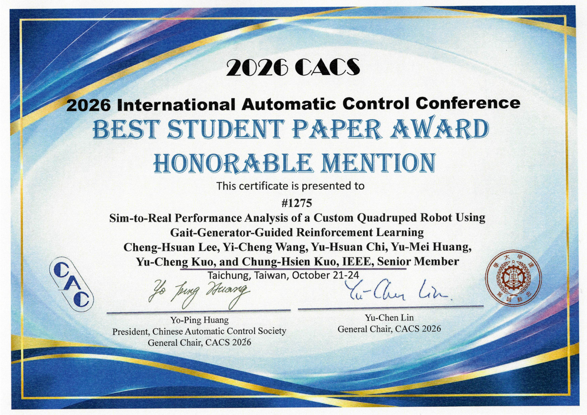
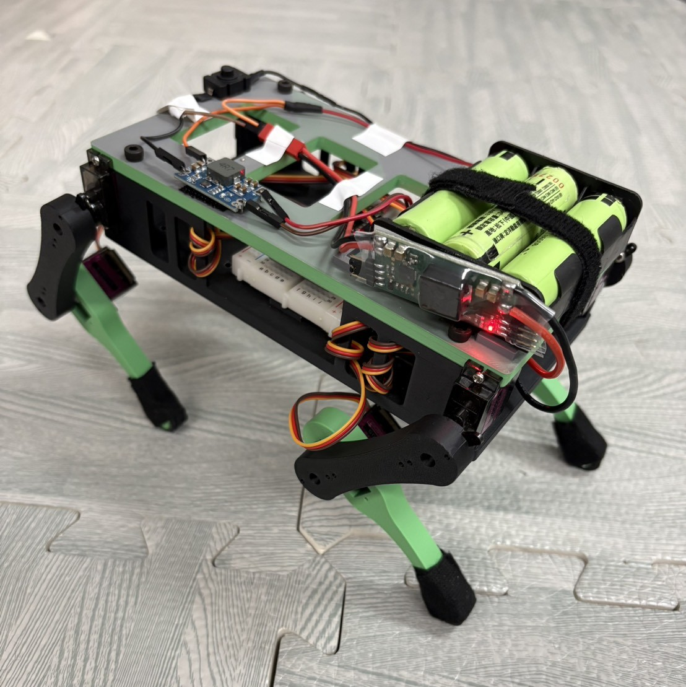
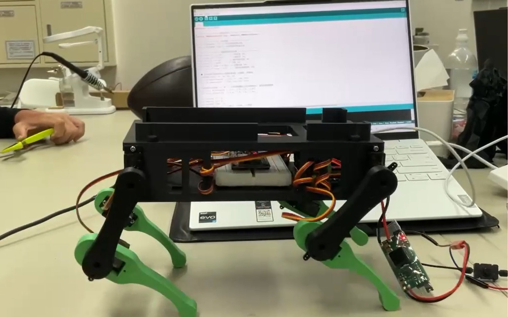
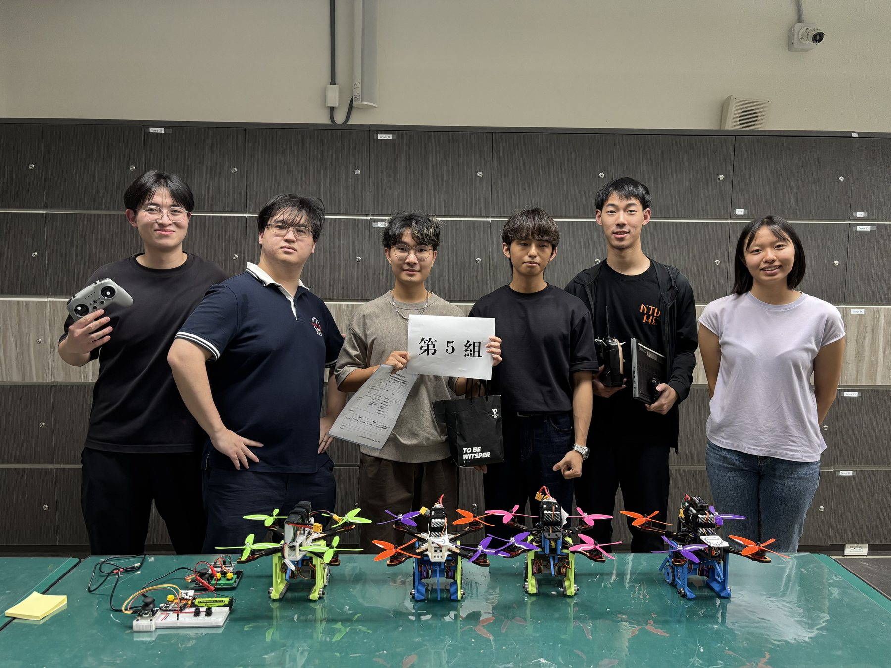
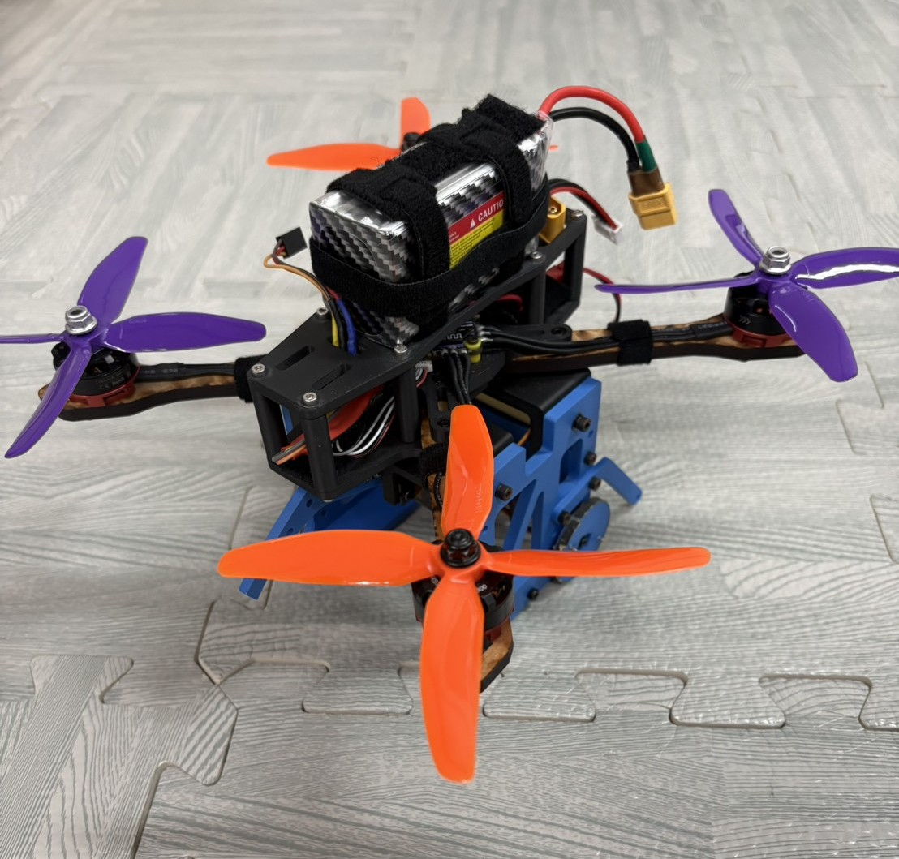
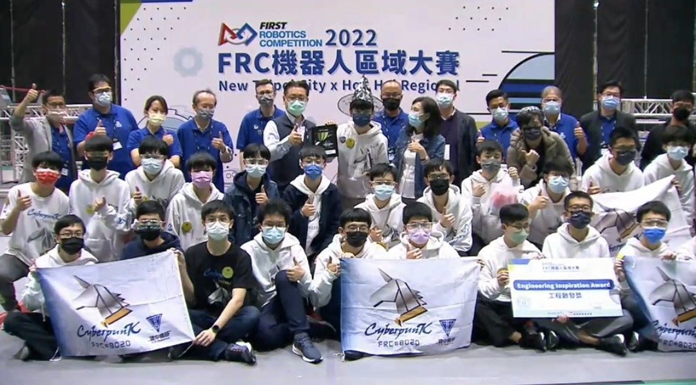
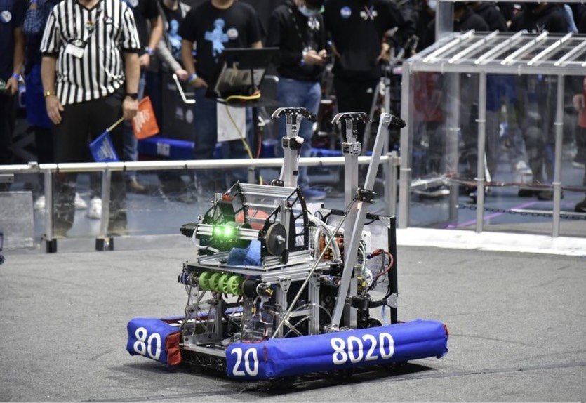
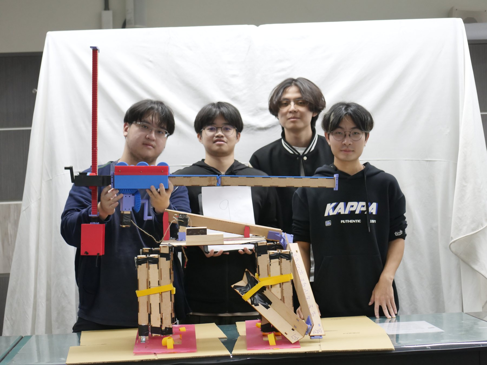
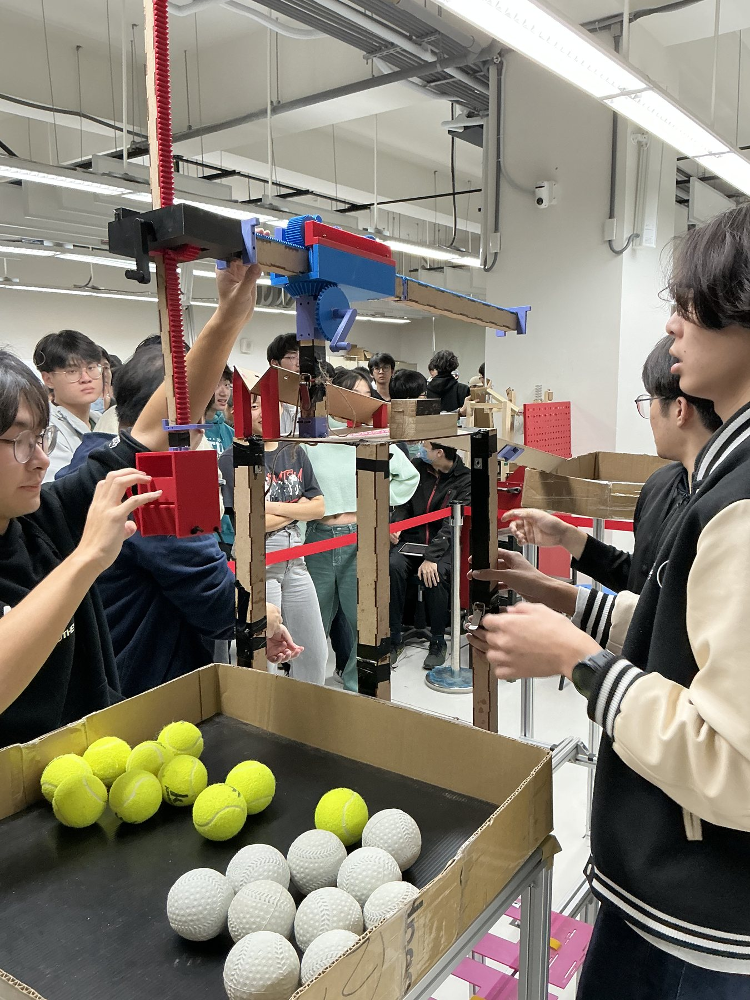

National Taiwan University · Mechanical Engineering
CHENG-HSUAN
LEE
Mechanical systems. Robot learning. Real hardware.
I connect actuator design, embedded control, and learned locomotion to make physical robots work beyond simulation.
English oral presentation
Selected among 11 finalists
Mechanical, embedded, and learning integration
Laboratory · NTUME ASR Lab
From actuator hardware to learned locomotion.
Undergraduate researcher · Rifle 12-DoF quadruped
My contribution spans the physical system and its learning pipeline: reducer fabrication, motor-control interfaces, locomotion training, and real-robot failure analysis.
- Build the platform. Cycloidal/planetary reducer work, actuator packaging, calibration, and hardware repair.
- Connect policy to motors. Isaac Lab / PPO, motor communication, ODrive / Teensy, and ROS 2 deployment.
- Explain failure with data. Rosbag, joint feedback, current traces, and training logs guide the next experiment.
Research outcome: first-author CACS 2026 paper and Best Student Paper Award — Honorable Mention.
Explore laboratory work
Publication · CACS 2026
An award-recognized answer to a real deployment failure.
- First Author
- English Oral Presentation
- Best Student Paper Award — Honorable Mention
Gait-guided learning for quadruped sim-to-real transfer
A pure-RL policy walked in simulation but failed on hardware. We verified a gait directly on the robot, then used it to guide PPO toward physically executable motion.
Two controllers, three hardware recordings each; 0.4 m/s straight, level-ground command. IEEE conference proceedings · CACS 2026.


Capabilities
What I bring to a robotics research team.
A hands-on contributor who can build the test platform, connect its control stack, and turn failed trials into engineering evidence.
01 / Hardware
Build & refine the robot
Mechanism design, reducer fabrication, actuator packaging, calibration, and repair access.
ASR Lab hardware02 / Control & learning
Connect simulation to execution
Isaac Lab / PPO, ROS 2, embedded motor communication, and joint-level feedback.
First-author research03 / Experiments
Make failure measurable
Joint tracking, current traces, rosbag analysis, thrust testing, and repeatable comparisons.
Measured transfer results04 / Leadership
Keep multidisciplinary work moving
Led robot, drone, and mechanism projects; programming, strategy, and scouting leadership in FRC.
Competition leadershipSelected Engineering Projects
I lead builds across mechanics, code, and testing.
Team lead · Mechanical design + embedded control
Course-Built Quadruped Robot Dog
Connected 3D-printed mechanics, gait simulation, servo calibration, and ESP32 control.
Outcome A+; walking, standing, sitting, waving, and rocking demonstrated.
View project

Team lead · System integration + flight testing
Quadcopter Ball-Transfer Drone
Led airframe/payload integration, thrust tests, signal debugging, and final-run preparation.
Outcome Full marks / A+; architecture and testing used as a reference by many peer teams.
View project

Programming, strategy & scouting lead
FIRST Robotics Competition
Connected autonomous logic, live match data, and mechanism constraints under competition pressure.
Outcome Houston Championship qualification; regional design, engineering, and inspiration awards.
View project

Team lead · Mechanism design + fabrication
Foldable Ball Transfer Mechanism
Led folding architecture, packaging decisions, fabrication planning, and repeated build tests.
Outcome A working mechanism with reliable deployment and ball transfer within storage constraints.
View project

Education
National Taiwan University
Mechanical Engineering · 2023–2027 (expected)
Robotics foundation in controls, mechanisms, electronics, and manufacturing.
Coursework & earlier education
Microprocessor Controlled Systems · Automatic Control · Applied Electronics · Mechanism · Machine Design Theory · Engineering Graphics · Practice of Mechanical Engineering · Manufacturing Processes · Workshop Practice · Mechanical Engineering Laboratory I/II · Engineering Materials · Strength of Materials · Dynamics · Numerical Analysis · Fluid Mechanics · Thermodynamics · Heat Transfer.
Taipei Municipal Chien Kuo High School, 2020–2023 · CKHS Robotics Team.
Recognition
Research recognition. Competition-tested leadership.
CACS 2026
Best Student Paper Award — Honorable Mention
First author · One of 11 finalists · English oral presentation
FIRST Robotics Competition
Houston Championship qualification
Regional engineering, industrial design, and inspiration awards.
- 2022 Sacramento Regional — Finalist & Industrial Design Award
- 2022 New Taipei City x Hon Hai Regional — Engineering Inspiration Award; qualified for Houston Championship
- 2023 Los Angeles Regional — Excellence in Engineering Award
- 2023 San Diego Regional — Excellence in Engineering Award
- 2nd ISS Kibo Robot Programming Challenge Taiwan Preliminaries — Merit Award
- 58th Hsinchu County Science Fair, Biology — Second Place
CV / PDF
CV, publication & supporting reports.
Publication
CACS 2026 — First-Author Conference Paper
Resume
Gait-generator-guided reinforcement learning and sim-to-real analysis of a custom quadruped. Best Student Paper Award — Honorable Mention.
Cheng-Hsuan Lee CV
Academic CV · first-author CACS 2026 paper and award, laboratory research, leadership, and selected projects.
Major Project Reports
Quadcopter Ball-Transfer Drone
Course: Practice of Mechanical Engineering
Final Engineering Report - English Version
Full system documentation covering mission strategy, airframe and payload integration, testing, failure analysis, and final evaluation planning.
Final Engineering Report - Original Chinese VersionOriginal submitted Chinese report preserved as the source version for the complete project documentation.
Experiment record Thrust-to-Throttle ExperimentMotor, propeller, ESC, and throttle-response testing used to guide propulsion decisions.
Test record Dynamic Testing After MidtermFlight behavior, drift, crash analysis, and reliability notes from system-level testing.
Debugging note Flight Controller, Motor Fault, and SBUS DebuggingEngineering note on signal-chain integration, motor troubleshooting, and control communication.
Personal record Personal Journal and FeedbackIndividual reflection on project leadership, weekly progress, and team execution.
Progress report First Progress ReportInitial concept selection and comparison across possible mechanical mission approaches.
Progress report Second Progress ReportEarly flight tests, ball-handling concept revision, and project direction changes.
Progress report Third Progress ReportHardware iteration, thrust experiment, remote-control packet debugging, and final strategy development.
Progress report Fourth Progress ReportThree-ball carrier updates, design comparison, final strategy, and future improvement plan.
Quadruped Robot Dog
Course: Microprocessor Controlled Systems
Final Robot Dog Report - English Version
Detailed report on mechanical architecture, embedded control, gait planning, hardware repair, and final demonstration.
Final Robot Dog Report - Original Chinese VersionOriginal submitted Chinese report preserved as the source version for the complete project documentation.
Final presentation Final Presentation DeckPresentation version of the robot dog build, including mechanism updates and behavior demonstrations.
Midterm report Midterm Progress ReportEarly MATLAB kinematics, hardware updates, circuit layout, and planned next steps.
Foldable Ball Transfer Mechanism
Course: Machine Design Theory
Final Machine Design Report - English Version
Final written report on the polar-positioning arm system, mechanism design, fabrication, assembly, and evaluation.
Final Machine Design Report - Original Chinese VersionOriginal submitted Chinese report preserved as the source version for the complete mechanism documentation.
Midterm report Midterm Design PresentationConcept-stage presentation covering container design, polar-positioning arm logic, and early architecture decisions.
Others
Numerical Analysis
Coursework evidence in computational methods and numerical problem solving.
Numerical Analysis Final Project - English Version
Final computational project covering numerical modeling, solution procedures, and analytical explanation.
Numerical Analysis Final Project - Original Chinese VersionOriginal submitted report preserved as the source version for the computational project.
Numerical Analysis Midterm Project - English VersionMidterm project evidence showing numerical experiments, plots, and interpretation.
Numerical Analysis Midterm Project - Original Chinese VersionOriginal submitted report preserved as the source version for the midterm project.
Principles of Air-Conditioning and Refrigeration
Coursework evidence in thermal systems, heat pump applications, and technical literature synthesis.
High-Temperature Heat Pump Application Report - English Version
Final report on high-temperature heat pump applications, industrial decarbonization potential, and use-case analysis.
High-Temperature Heat Pump Application Report - Original Chinese VersionOriginal submitted Chinese report preserved as the source version for the thermal systems documentation.
Final presentation High-Temperature Heat Pump PresentationPresentation deck summarizing motivation, literature review, application scenarios, and future outlook.
Mechanical Engineering Experiments
Coursework evidence in measurement, instrumentation, data reduction, and experimental reasoning.
Contact
Let’s build robots that hold up in the real world.
Seeking graduate research opportunities in legged robotics, actuation, and learning-based control.
Name
CHENG-HSUAN LEE
Taipei, Taiwan